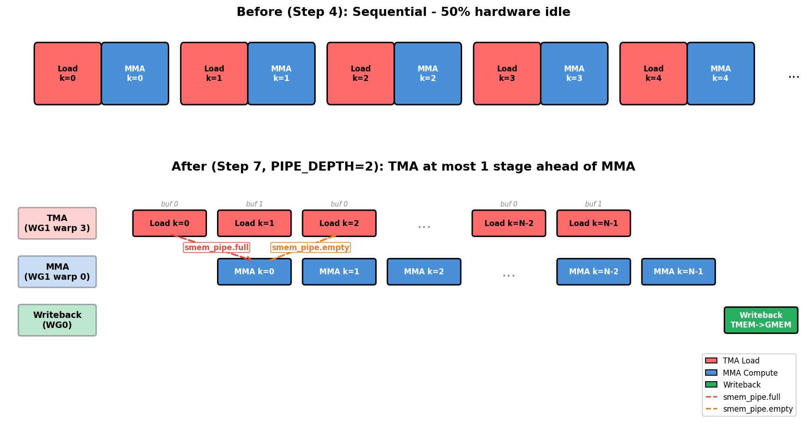

使用 Warp Specialization 和 Cluster 扩展 GEMM#
概览
第 7 步将 TMA load、MMA 和 writeback 分配给不同的 warp roles，并用四个 barriers 连接数据准备与 buffer 复用。
第 8 步让两个 CTAs 通过 cooperative MMA 共同计算一个更大的 output tile，并处理跨 CTA 的 operand 读取与 barrier 交接。
第 9 步增加第二个 MMA consumer，让两组 A blocks 共享同一份 staged B tile；最终版本在本章测试条件下达到 cuBLAS reference 的性能。
上一章的 pipelined GEMM（使用 TMA 为 GEMM 建立 Pipeline）已经引入 TMA、software pipeline 和 persistent scheduling，但 kernel 中仍然只有一个 warpgroup。它既要发起 TMA load，也要等待 A、B tiles 准备完成并发起 MMA，最后还要完成结果写回。虽然这些操作由不同的硬件单元执行，它们的控制与同步仍集中在同一个 warpgroup 中。
Software pipeline 已经让部分 load 与 compute 发生重叠，但各阶段的推进仍然相互牵制。这个 warpgroup 等待某个阶段完成或执行 writeback 时，无法独立推进其他阶段。要让数据搬运、矩阵计算和结果写回持续并行，需要让不同 warps 分别负责固定的工作。
本章分三步扩大 kernel 的协作范围：第 7 步将 TMA、MMA 和 writeback 分配给不同的 warp roles；第 8 步让两个 CTAs 协作计算一个更大的 output tile；第 9 步增加第二个 MMA consumer。GEMM 的数学计算保持不变，重点转向不同 warps 和 CTAs 如何分工，以及它们如何通过 barriers 交接数据和资源。
第 7 步：Warp Specialization 与 Pipeline#
单 warpgroup kernel 中，所有 threads 都沿着 load、compute、writeback 的同一条路径执行。加载数据时 Tensor Cores 无事可做，执行计算时 TMA engine 也可能空闲。Warp specialization 将这些工作交给不同 warps，再用 software pipeline 在它们之间传递数据，使多个阶段可以同时运行。
这一步改变 Scope
Scope：一个 warpgroup 依次执行 load → MMA → writeback，改为由 TMA producer、MMA consumer 和 writeback 三个角色并行工作，并通过 full/empty barriers 交接数据。
Layout：不变，继续使用第 6 步中的 SMEM stages 和 TMEM accumulator。
Dispatch：不变，仍使用 TMA loads 和
tcgen05MMA。
多级 SMEM pipeline 和 persistent ClusterPersistentScheduler2D 沿用第 5、6 步的实现，这里只改变工作分配方式。
从串行执行到并发 Pipeline#
下图比较 warp specialization 前后的调度方式。上半部分用第 4 步的串行时间线概括第 4 至 6 步尚未拆分角色时的执行方式，下半部分则表示第 7 步的并发调度。

在上半部分，同一组 threads 同时负责 load 和 MMA，一条路径工作时，另一条路径很容易空闲。第 5、6 步虽然加入了 double buffering 和 persistent scheduling，但尚未把 load 与 compute 拆成独立的 producer 和 consumer。下半部分中，TMA producer 会在 MMA consumer 计算当前 tile 时预取下一个 tile，writeback 也独立执行。Producer warp 3 发起下一次 load 时，consumer warp 0 仍可继续当前 MMA。
图中的 smem_pipe.full 和 smem_pipe.empty，在下面的实现中分别对应 tma2mma 和 mma2tma。
Load 与 MMA 之间通过两个 barriers 交接 SMEM buffer：
tma2mma（TMA → MMA）：表示 SMEM data 已经加载完成，可以由 MMA 读取。mma2tma（MMA → TMA）：表示 MMA 已经读完当前 buffer，TMA 可以用它加载下一块数据。
图中的 mma2tma 箭头会跨过一个 stage，这是由 ring buffer 的复用顺序决定的。PIPE_DEPTH=2 时，TMA Load k=0 填充 stage 0，TMA Load k=1 填充 stage 1。MMA Compute k=0 读完 stage 0 后，真正需要复用该位置的是 TMA Load k=2，而不是正在使用 stage 1 的 k=1。因此，从 MMA Compute k=0 发出的 mma2tma 信号会对应到 TMA Load k=2。
Warp 角色#
WG_NUMBER=2 时，kernel 使用两个 warpgroups，并将 load、compute 和 writeback 分配如下：
角色 |
位置 |
工作 |
|---|---|---|
TMA Producer |
Warpgroup 1，warp 3 |
持续通过 TMA 加载 A、B tiles |
MMA Consumer |
Warpgroup 1，warp 0 |
数据准备好后执行 MMA |
Writeback |
Warpgroup 0（全部 warps） |
从 TMEM 读取结果并写回 GMEM |
四个 Barriers#
三个并发角色之间需要四个 barriers。正向路径 TMA → MMA → Writeback 表示数据已经准备好；反向路径 Writeback → MMA → TMA 表示 buffer 已经释放。Barrier 名称采用 source2destination，例如 tma2mma 表示 TMA 向 MMA 发送通知。
Barrier |
类型 |
方向 |
含义 |
|---|---|---|---|
tma2mma |
|
TMA → MMA |
SMEM data 已准备好 |
mma2tma |
|
MMA → TMA |
SMEM buffer 可以复用 |
mma2ld |
|
MMA → Writeback |
TMEM results 已准备好 |
ld2mma |
|
Writeback → MMA |
TMEM 可以供下一个 tile 使用 |
Barrier 类型取决于 producer 如何报告完成。TMA load 使用带 byte counting 的 TMABar，传输完成后由 TMA hardware 更新 barrier。TMA store 的完成状态则由发起指令的 thread 通过 async group 跟踪：先执行 cp_async.bulk.commit_group()，再用 wait_group(0) 等待写入完成。MMA operation 使用 TCGen05Bar，tcgen05.commit() 会在 MMA 完成后更新该 barrier。
这里的 arrive 调用传入 cta_mask=0，因为当前 kernel 只涉及一个 CTA。第 8 步组成 cluster 后，这个参数会用来通知另一个 CTA。
PipelineState#
四个 barriers 说明 buffer 何时可用，PipelineState 则记录每个角色当前使用哪个 stage，以及应该等待该 stage 的哪个 phase。手工同时维护这两个值容易产生 off-by-one error，并导致整个 kernel deadlock。PipelineState 将它们放在同一个状态对象中：
tma_ps = PipelineState(PIPE_DEPTH, phase=1) # Producer starts ready (phase=1)
# tma_ps.stage = current stage index
# tma_ps.phase = current phase (0 or 1)
tma_ps.advance() # Advance to next stage
初始 phase 决定一个角色的第一次 wait 是直接通过还是等待。Pipeline 两端的初始状态正好相反：
phase=1（producer）：第一次wait(phase=1)看到 barrier 仍处于 phase 0，因此会直接通过。Buffer 初始为空，producer 可以立即开始填充。phase=0（consumer）：第一次wait(phase=0)看到 barrier 处于 phase 0，因此会等待。此时尚无数据，必须等 producer 完成加载后才能继续。
如果两端使用相同的初始 phase，kernel 可能 deadlock，也可能在数据尚未准备好时继续执行。
使用 Named Barrier 同步一个 Warpgroup#
第 7 步的 writeback 由 Warpgroup 0 的 128 个 threads 完成。它们先分别把 registers 写入 Dsmem，等整块 tile 都写完后，再由其中一个 thread 发起 TMA store。这里需要同步 Warpgroup 0，但不能使用 cta_sync()：CTA 中的另一个 warpgroup 正在执行 producer 和 MMA consumer 分支，不会到达这个同步点。如果 Warpgroup 0 在分支内等待整个 CTA，kernel 就会 deadlock。
warpgroup_sync(10) 会 lower 为：
bar.sync 10, 128
其中 10 是 named barrier ID，128 是这次同步需要收到的 thread arrivals。该指令不会自动识别当前 warpgroup；这里之所以只同步 Warpgroup 0，是因为只有它的 128 个 threads 会执行这段代码，并且全部使用相同的 barrier ID。第一次 warpgroup_sync(10) 保证 Dsmem 已经写完整，第二次则保证 selected thread 已经等待 TMA store 完成，其他 threads 才进入下一轮。
每个 CTA 有 16 个 named barrier slots，ID 范围为 0–15。参与同一次同步的 threads 必须使用相同 ID，彼此独立的同步则应使用不同 ID。第 7 步只有 Warpgroup 0 执行 writeback，因此固定使用 ID 10；第 9 步有两个 writeback warpgroups，使用 warpgroup_sync(wg_id + 10) 后，它们分别使用 IDs 10 和 11，避免两组 arrivals 被计入同一轮同步。
Epilogue（Writeback）#
第 7 步中 BLK_N=128，writeback warpgroup 可以一次将整个 TMEM tile 读入 registers，再发起一次 TMA store。执行顺序如下：
使用
mma2ld.wait(phase)等待 MMA 完成，再执行T.ptx.tcgen05.fence.after_thread_sync()，将后续的tcgen05.ld排在这次跨 thread 的完成通知之后。将 TMEM 读入 registers。每个 thread 接收 128 个 fp32 values；warpgroup 先执行
Tx.copy_async(reg_wg, tmem[:, :BLK_N])，再使用T.ptx.tcgen05.wait.ld()等待 load 完成。所有 128 个 writeback threads 执行
ld2mma.arrive(0, cta_id=0, pred=True)，通知 MMA 当前 TMEM 已经可以供下一个 tile 使用。cta_id=0表示更新当前 CTA 的 local barrier；pred=True表示每个 writeback thread 都执行 arrival。第 8 步会改用cta_mask通知 cluster 中的 CTAs。在 registers 中将 fp32 转换为 fp16。
将 registers 写入
Dsmem，再执行fence.proxy_async("shared::cta")和warpgroup_sync(10)。使用
cp_async.bulk.commit_group()和wait_group(0)，通过 TMA 将Dsmem写回 GMEM。
这里的 mbarrier wait 和 tcgen05.wait.ld() 负责等待两项不同的工作：前者确认 MMA 已经完成，fence.after_thread_sync() 建立跨 thread 的 tcgen05 执行顺序，后者再确认异步 TMEM load 已经写入目标 registers。
完整 Kernel#
下面把前面的角色分工、四个 barriers、PipelineState 和 writeback path 组合成第 7 步的完整实现。Kernel 沿用第 6 步的 persistent scheduler，并使用 PIPE_DEPTH=2；这是能够让 load 与 compute 重叠的最小深度。更深的 pipeline 可以隐藏更多 memory latency，但也会占用更多 SMEM。
import tvm
from tvm.script import tirx as T
from tvm.script.tirx import tile as Tx
from tvm.tirx.layout import TileLayout, S, TLane, TCol, tid_in_wg
from tvm.tirx.cuda.operator.tile_primitive.tma_utils import tma_shared_layout, SwizzleMode
from tvm.tirx.lang.pipeline import TMABar, TCGen05Bar, MBarrier, PipelineState
from tvm.tirx.lang.tile_scheduler import ClusterPersistentScheduler2D
SM_COUNT = 148 # Number of SMs on NVIDIA B200 GPU
F16_SIZE = 2
def hgemm_v7(M, N, K):
a_type = tvm.DataType("float16")
b_type = tvm.DataType("float16")
d_type = tvm.DataType("float16")
acc_type = tvm.DataType("float32")
BLK_M, BLK_N, BLK_K = 128, 128, 64
K_TILES = K // BLK_K
PIPE_DEPTH = 2
WG_NUMBER = 2
A_layout = tma_shared_layout(a_type, SwizzleMode.SWIZZLE_128B_ATOM, (PIPE_DEPTH, BLK_M, BLK_K))
B_layout = tma_shared_layout(b_type, SwizzleMode.SWIZZLE_128B_ATOM, (PIPE_DEPTH, BLK_N, BLK_K))
D_layout = tma_shared_layout(d_type, SwizzleMode.SWIZZLE_128B_ATOM, (BLK_M, BLK_N))
@T.prim_func
def kernel(
A: T.Buffer((M, K), a_type),
B: T.Buffer((N, K), b_type),
D: T.Buffer((M, N), d_type),
):
T.device_entry()
bx = T.cta_id([SM_COUNT])
wg_id = T.warpgroup_id([WG_NUMBER])
warp_id = T.warp_id_in_wg([4])
lane_id = T.lane_id([32])
# --- Allocation ---
pool = T.SMEMPool()
tmem_addr = pool.alloc((1,), "uint32")
tma2mma = TMABar(pool, PIPE_DEPTH)
mma2tma = TCGen05Bar(pool, PIPE_DEPTH)
mma2ld = TCGen05Bar(pool, 1)
ld2mma = MBarrier(pool, 1)
pool.move_base_to(1024)
Asmem = pool.alloc((PIPE_DEPTH, BLK_M, BLK_K), a_type, layout=A_layout)
Bsmem = pool.alloc((PIPE_DEPTH, BLK_N, BLK_K), b_type, layout=B_layout)
Dsmem = pool.alloc((BLK_M, BLK_N), d_type, layout=D_layout)
# --- Barrier init ---
tma2mma.init(1)
mma2tma.init(1)
mma2ld.init(1)
ld2mma.init(128) # all 128 Warpgroup 0 threads arrive
pool.commit()
# --- TMEM alloc + fence ---
if wg_id == 0:
if warp_id == 0:
T.ptx.tcgen05.alloc(T.address_of(tmem_addr), n_cols=512, cta_group=1)
T.ptx.fence.proxy_async("shared::cta")
T.ptx.fence.mbarrier_init()
T.cuda.cta_sync()
tmem = T.decl_buffer(
(128, 512), acc_type, scope="tmem", allocated_addr=tmem_addr[0],
layout=TileLayout(S[(128, 512) : (1@TLane, 1@TCol)]))
# --- Tile scheduler ---
tile_scheduler = ClusterPersistentScheduler2D(
"ts", num_m_tiles=M // BLK_M, num_n_tiles=N // BLK_N,
l2_group_size=8, num_clusters=SM_COUNT)
tile_scheduler.init(bx)
m_st = T.meta_var(tile_scheduler.m_idx * BLK_M)
n_st = T.meta_var(tile_scheduler.n_idx * BLK_N)
# =============================================
# Warpgroup 1: TMA Producer (warp 3) + MMA Consumer (warp 0)
# =============================================
if wg_id == 1:
if warp_id == 3:
# === TMA Producer ===
tma_ps = PipelineState(PIPE_DEPTH, phase=1)
@T.inline
def tma_load(k_offset):
Tx.copy_async(Asmem[tma_ps.stage, :, :],
A[m_st:m_st+BLK_M, k_offset:k_offset+BLK_K],
dispatch="tma", cta_group=1,
mbar=tma2mma.ptr_to([tma_ps.stage]))
Tx.copy_async(Bsmem[tma_ps.stage, :, :],
B[n_st:n_st+BLK_N, k_offset:k_offset+BLK_K],
dispatch="tma", cta_group=1,
mbar=tma2mma.ptr_to([tma_ps.stage]))
if T.filter(lane_id, T.ptx.elect_sync()):
while tile_scheduler.valid():
for k in range(K_TILES):
mma2tma.wait(tma_ps.stage, tma_ps.phase)
tma_load(k * BLK_K)
tma2mma.arrive(tma_ps.stage,
(BLK_M * BLK_K + BLK_N * BLK_K) * F16_SIZE)
tma_ps.advance()
tile_scheduler.next_tile()
elif warp_id == 0:
# === MMA Consumer ===
mma_ps = PipelineState(PIPE_DEPTH, phase=0)
ld_ps = PipelineState(1, phase=1)
if T.filter(lane_id, T.ptx.elect_sync()):
while tile_scheduler.valid():
# Wait for TMEM to be free from previous tile's writeback
ld2mma.wait(ld_ps.stage, ld_ps.phase)
ld_ps.advance()
for k in range(K_TILES):
tma2mma.wait(mma_ps.stage, mma_ps.phase)
Tx.gemm_async(
tmem[:, :BLK_N],
Asmem[mma_ps.stage, :, :],
Bsmem[mma_ps.stage, :, :],
accum=(k != 0), dispatch="tcgen05", cta_group=1)
mma2tma.arrive(mma_ps.stage, cta_group=1, cta_mask=0)
mma_ps.advance()
# Signal results ready for writeback
mma2ld.arrive(0, cta_group=1, cta_mask=0)
tile_scheduler.next_tile()
# =============================================
# Warpgroup 0: Writeback
# =============================================
elif wg_id == 0:
wb_ps = PipelineState(1, phase=0)
reg_f16 = T.alloc_local((BLK_N,), d_type)
while tile_scheduler.valid():
# Wait for MMA results
mma2ld.wait(wb_ps.stage, wb_ps.phase)
wb_ps.advance()
T.ptx.tcgen05.fence.after_thread_sync()
# Read TMEM -> registers (warpgroup scope)
reg = T.alloc_local((BLK_N,), acc_type)
reg_wg = reg.view(128, BLK_N,
layout=TileLayout(S[(128, BLK_N) : (1@tid_in_wg, 1)]))
Tx.wg.copy_async(reg_wg[:], tmem[:, :BLK_N])
T.ptx.tcgen05.wait.ld()
# Signal TMEM free (all 128 threads arrive)
ld2mma.arrive(0, cta_id=0, pred=True)
# Cast fp32 -> fp16
Tx.cast(reg_f16[:], reg[:])
# Write to Dsmem + TMA store
Tx.copy(Dsmem[warp_id * 32 + lane_id, :], reg_f16[:])
T.ptx.fence.proxy_async("shared::cta")
T.cuda.warpgroup_sync(10)
if warp_id == 0:
if lane_id == 0:
Tx.copy_async(D[m_st:m_st+BLK_M, n_st:n_st+BLK_N],
Dsmem[:, :], dispatch="tma")
T.ptx.cp_async.bulk.commit_group()
T.ptx.cp_async.bulk.wait_group(0)
T.cuda.warpgroup_sync(10)
tile_scheduler.next_tile()
# --- Cleanup ---
T.cuda.cta_sync()
if warp_id == 0:
T.ptx.tcgen05.relinquish_alloc_permit(cta_group=1)
T.ptx.tcgen05.dealloc(tmem_addr[0], n_cols=512, cta_group=1)
return kernel
检查 Barrier 交接#
第 7 步用四条 barriers 连接三个角色。若 kernel 一直等待，先逐条确认 barrier 的两端：谁在执行 wait，谁负责 arrive，初始化时设置的 arrival count 是否与实际通知次数一致。若 kernel 能结束但结果错误，则应检查 consumer 是否在 wait 和 fence 完成前读取数据。
还要确认每块存储何时可以复用：TMA 只能在 mma2tma 完成后覆盖当前 Asmem、Bsmem stage；MMA 只能在 ld2mma 完成后覆盖 TMEM accumulator；下一轮 writeback 也必须等前一次 TMA store 完成后才能复用 Dsmem。这样可以把一次 deadlock 或错误结果定位到具体的数据交接，而不必同时检查整条 pipeline。
Barrier 推演：追踪一个 K tile 依次经过 tma2mma、mma2tma、mma2ld 和 ld2mma 的过程。对于每个 barrier，说明谁执行 wait、谁执行 arrival、哪份数据随后可以安全读取，以及哪个 buffer 可以复用。
Pipeline Depth 的 SMEM 成本#
PIPE_DEPTH=2 包含两组 A、B stages：MMA 读取其中一组时，TMA 可以填充另一组。增加 depth 可以让 producer 提前准备更多 tiles，但每增加一个 stage 都要多分配一组 Asmem 和 Bsmem。
当前 tile shape 为 BLK_M=BLK_N=128、BLK_K=64，元素类型为 fp16，因此每个 stage 占用：
(128×64 + 128×64) × 2 bytes = 32 KB
此外，Dsmem writeback buffer 还需要 32 KB。于是 PIPE_DEPTH=4 共使用约 4×32+32=160 KB，PIPE_DEPTH=6 则约为 6×32+32=224 KB，尚未计入 barriers 等少量 metadata。B200 每个 SM 提供 228 KB shared memory，因此 depth 6 已经几乎用完可用容量。更深的 pipeline 不一定更快，还可能因 SMEM 不足而无法使用当前 tile shape。
第 8 步：Two-CTA Cluster#
第 7 步的协作范围仍然局限在一个 CTA 内。第 8 步把这个范围扩展到由两个 CTAs 组成的 cluster。
这一步改变 Scope、Layout 和 Dispatch
Scope：协作范围由一个 CTA 扩展到 cluster 中的两个 CTAs。
Layout：A、B slices 分布在两个 CTAs 的 SMEM 中，accumulator 也分布在两侧的 TMEM 中。
Dispatch：
Tx.gemm_async使用cta_group=2发起 two-CTA cooperative MMA；完成通知通过cta_mask=3同时发送到两侧。
A、B 的 CTA 分工#
下图把一个 \(256\times256\) output tile 分到左右两个 CTAs。先看两侧的 Asmem：CTA 0 加载 A 的 rows 0–127，CTA 1 加载 rows 128–255。这两份 A slices 决定各自负责的 output rows，因此图中的两个橙色区域分别是 D[0:128, 0:256] 和 D[128:256, 0:256]。
再看两侧的 Bsmem。B 在内存中的 shape 为 N×K，所以 CTA 0 和 CTA 1 加载的两组 stored-B rows 经过 B.T 后，分别对应 output 的前 128 列和后 128 列。每个 CTA 都要计算自己 128 行上的全部 256 列，因此 cooperative MMA 还会通过图中央的跨 CTA 读取取得另一侧的 Bsmem。这样，每份 A slice 都会同时与两份 B slices 相乘。
点击两侧的 Asmem、Bsmem 或图中央的跨 CTA 读取，可以查看各部分在 cooperative MMA 中的作用。
Tile scheduler 返回的 (m_idx, n_idx) 表示一个 \(256\times256\) cluster output tile。令它的左上角为 m_base = m_idx * 256、n_base = n_idx * 256，两个 CTAs 的分工如下：
CTA |
加载的 A slice |
加载的 stored-B slice |
写回的 D 区域 |
|---|---|---|---|
CTA 0 |
|
|
|
CTA 1 |
|
|
|
第 7 步的单个 CTA 加载一份 \(128\times K\) 的 A 和一份 \(128\times K\) 的 B，计算一个 \(128\times128\) output tile。这里的 cluster 加载两份 A 和两份 B，operand data 增加到两倍；output tile 则扩大为 \(256\times256\)，元素数量增加到四倍。两份 A slices 都会分别与两份 B slices 相乘，因此每份 staged operand 参与的计算量约为原来的两倍。
Tile 地址计算#
因为 scheduler 以 \(256\times256\) cluster tile 为单位，所以 M、N 方向的 tile 数量分别是 M // 256 和 N // 256。
cbx 表示 CTA 在 cluster 中的位置，取值为 0 或 1。基于上面的 m_base 和 n_base，两个 CTAs 使用 cbx 选择各自负责加载的 A、B slices：
cbx, cby = T.cta_id_in_cluster([CTA_GROUP, 1])
m_st = m_base + cbx * BLK_M
n_st = n_base + cbx * BLK_N
因此，CTA 0 从 m_base 和 n_base 开始加载，CTA 1 则分别向后移动 128 行。m_st 同时也是该 CTA 最终写回的 output row 起点；n_st 只用于选择它提供给 cooperative MMA 的 stored-B rows。
两份 B slices 会共同参与 MMA，所以每个 CTA 都会得到自己 128 行上的全部 256 个 output columns。Epilogue 分两次写回这 256 列，no=0,1 分别选择前后两个 128-column chunks：
n_st_epi = n_base + no * BLK_N
这里不使用 cbx，因为 cbx 选择的是当前 CTA 加载的 B slice，而不是它最终写回的 output columns。
Cluster 中的数据交接#
两个 CTAs 各自拥有 SMEM 和 barriers。为了让一次 cooperative MMA 等到两侧的数据都准备好，并在完成后通知两侧继续执行，这里需要完成三次交接。
TMA → MMA。 当前实现使用 CTA 0 的 tma2mma 统一记录两侧 TMA loads 的完成状态，两个 CTAs 都通过同一个 remote view 引用它：
tma2mma_cta0 = tma2mma.remote_view(0)
两侧的 TMA loads 都将完成状态报告到这份 barrier，CTA 0 则通过一次 arrive 登记两侧 operands 的总字节数。每个 CTA 加载一份 BLK_M×BLK_K 的 A 和一份 BLK_N×BLK_K 的 B，因此登记的 byte count 为：
CTA_GROUP * (BLK_M * BLK_K + BLK_N * BLK_K) * F16_SIZE
只有这些 bytes 全部传输完成，CTA 0 中的 MMA consumer 才能通过 wait。
MMA → TMA 和 writeback。 Cooperative MMA 只需发起一次。代码用 if cbx == 0: 保留 CTA 0 的 MMA path，其中选出的一个 thread 使用 cta_group=2 发出指令：
if cbx == 0:
Tx.gemm_async(..., cta_group=2)
硬件会读取两个 CTAs 的 SMEM，并更新两侧的 TMEM accumulator。每次 K iteration 发出异步 MMA 后，同一个 thread 都通过 mma2tma 登记完成通知；整个 K-loop 发完后，再通过 mma2ld 登记最终 accumulator 的完成通知：
for k in range(K_TILES):
Tx.gemm_async(..., cta_group=2)
mma2tma.arrive(mma_ps.stage, cta_group=2, cta_mask=3)
mma2ld.arrive(0, cta_group=2, cta_mask=3)
cta_mask=3 的二进制形式是 11，表示 CTA 0 和 CTA 1 都是通知目标。每次 MMA 完成后，mma2tma 允许两侧 TMA producer 复用已经读完的 SMEM stage；整个 K-loop 完成后，mma2ld 则通知两侧 writeback warpgroups，TMEM accumulator 已经可以读取。
Writeback → 下一块 tile 的 MMA。 两侧 writeback warpgroups 使用完 TMEM 后，各有 128 个 threads 向 CTA 0 的 ld2mma barrier 报告 arrival。该 barrier 因此初始化为 128 * CTA_GROUP，也就是 256。收到全部 arrivals 后，CTA 0 才能让下一块 output tile 的 MMA 复用这片 TMEM。
TMEM 的申请和释放同样使用 cta_group=2。释放前执行 cluster_sync()，确保两个 CTAs 都已结束当前访问。Writeback 则将 256 列结果拆成两个 128-column chunks，每轮只读回一半 TMEM 数据并完成一次 TMA store，避免每个 thread 同时保存 256 个 fp32 values。
完整 Kernel#
下面将 tile 分工、cooperative MMA 和跨 CTA barrier 协议组合成完整 kernel：
def hgemm_v8(M, N, K):
a_type = tvm.DataType("float16")
b_type = tvm.DataType("float16")
d_type = tvm.DataType("float16")
acc_type = tvm.DataType("float32")
CTA_GROUP = 2
BLK_M, BLK_N, BLK_K = 128, 128, 64
MMA_M, MMA_N = 256, 256
K_TILES = K // BLK_K
PIPE_DEPTH = 4
WG_NUMBER = 2
F16_SIZE = 2 # fp16
A_layout = tma_shared_layout(a_type, SwizzleMode.SWIZZLE_128B_ATOM, (PIPE_DEPTH, BLK_M, BLK_K))
B_layout = tma_shared_layout(b_type, SwizzleMode.SWIZZLE_128B_ATOM, (PIPE_DEPTH, BLK_N, BLK_K))
D_layout = tma_shared_layout(d_type, SwizzleMode.SWIZZLE_128B_ATOM, (BLK_M, 128))
@T.prim_func
def kernel(
A: T.Buffer((M, K), a_type),
B: T.Buffer((N, K), b_type),
D: T.Buffer((M, N), d_type),
):
T.device_entry()
bx = T.cta_id([SM_COUNT])
cbx, cby = T.cta_id_in_cluster([CTA_GROUP, 1])
wg_id = T.warpgroup_id([WG_NUMBER])
warp_id = T.warp_id_in_wg([4])
lane_id = T.lane_id([32])
# --- Allocation ---
pool = T.SMEMPool()
tmem_addr = pool.alloc((1,), "uint32")
tma2mma = TMABar(pool, PIPE_DEPTH)
mma2tma = TCGen05Bar(pool, PIPE_DEPTH)
mma2ld = TCGen05Bar(pool, 1)
ld2mma = MBarrier(pool, 1)
pool.move_base_to(1024)
Asmem = pool.alloc((PIPE_DEPTH, BLK_M, BLK_K), a_type, layout=A_layout)
Bsmem = pool.alloc((PIPE_DEPTH, BLK_N, BLK_K), b_type, layout=B_layout)
Dsmem = pool.alloc((BLK_M, 128), d_type, layout=D_layout)
# --- Barrier init ---
tma2mma.init(1)
mma2tma.init(1)
mma2ld.init(1)
ld2mma.init(128 * CTA_GROUP) # both CTAs' writeback threads
pool.commit()
# --- TMEM alloc (cooperative) ---
if wg_id == 0:
if warp_id == 0:
T.ptx.tcgen05.alloc(T.address_of(tmem_addr), n_cols=512, cta_group=CTA_GROUP)
T.ptx.fence.proxy_async("shared::cta")
T.ptx.fence.mbarrier_init()
T.cuda.cta_sync()
tmem = T.decl_buffer(
(128, 512), acc_type, scope="tmem", allocated_addr=tmem_addr[0],
layout=TileLayout(S[(128, 512) : (1@TLane, 1@TCol)]))
# --- Tile scheduler (cluster tiles) ---
tile_scheduler = ClusterPersistentScheduler2D(
"ts", num_m_tiles=M // 256, num_n_tiles=N // 256,
l2_group_size=8, num_clusters=SM_COUNT // CTA_GROUP)
tile_scheduler.init(bx // CTA_GROUP)
m_idx = T.meta_var(tile_scheduler.m_idx)
n_idx = T.meta_var(tile_scheduler.n_idx)
m_st = T.meta_var((m_idx * CTA_GROUP + cbx) * BLK_M)
n_st = T.meta_var((n_idx * CTA_GROUP + cbx) * BLK_N)
# --- Cross-CTA barrier view ---
tma2mma_cta0 = tma2mma.remote_view(0)
# =============================================
# Warpgroup 1: TMA Producer (warp 3) + MMA Consumer (warp 0)
# =============================================
if wg_id == 1:
if warp_id == 3:
tma_ps = PipelineState(PIPE_DEPTH, phase=1)
@T.inline
def tma_load(k_offset):
Tx.copy_async(Asmem[tma_ps.stage, :, :],
A[m_st:m_st+BLK_M, k_offset:k_offset+BLK_K],
dispatch="tma", cta_group=CTA_GROUP,
mbar=tma2mma_cta0.ptr_to([tma_ps.stage]))
Tx.copy_async(Bsmem[tma_ps.stage, :, :],
B[n_st:n_st+BLK_N, k_offset:k_offset+BLK_K],
dispatch="tma", cta_group=CTA_GROUP,
mbar=tma2mma_cta0.ptr_to([tma_ps.stage]))
if T.filter(lane_id, T.ptx.elect_sync()):
while tile_scheduler.valid():
for k in range(K_TILES):
mma2tma.wait(tma_ps.stage, tma_ps.phase)
tma_load(k * BLK_K)
if cbx == 0:
tma2mma_cta0.arrive(tma_ps.stage,
CTA_GROUP * (BLK_M * BLK_K + BLK_N * BLK_K) * F16_SIZE)
tma_ps.advance()
tile_scheduler.next_tile()
elif warp_id == 0:
mma_ps = PipelineState(PIPE_DEPTH, phase=0)
ld_ps = PipelineState(1, phase=1)
if cbx == 0:
if T.filter(lane_id, T.ptx.elect_sync()):
while tile_scheduler.valid():
ld2mma.wait(ld_ps.stage, ld_ps.phase)
ld_ps.advance()
for k in range(K_TILES):
tma2mma.wait(mma_ps.stage, mma_ps.phase)
Tx.gemm_async(
tmem[:, :MMA_N],
Asmem[mma_ps.stage, :, :],
Bsmem[mma_ps.stage, :, :],
accum=(k != 0), dispatch="tcgen05", cta_group=CTA_GROUP)
mma2tma.arrive(mma_ps.stage, cta_group=CTA_GROUP, cta_mask=3)
mma_ps.advance()
mma2ld.arrive(0, cta_group=CTA_GROUP, cta_mask=3)
tile_scheduler.next_tile()
# =============================================
# Warpgroup 0: Writeback (256 columns in 2 x 128-column chunks)
# =============================================
elif wg_id == 0:
wb_ps = PipelineState(1, phase=0)
reg_f16 = T.alloc_local((128,), d_type)
while tile_scheduler.valid():
mma2ld.wait(wb_ps.stage, wb_ps.phase)
wb_ps.advance()
T.ptx.tcgen05.fence.after_thread_sync()
for no in T.unroll(2): # 2 chunks of 128 columns = 256 total
reg = T.alloc_local((128,), acc_type)
reg_wg = reg.view(128, 128,
layout=TileLayout(S[(128, 128) : (1@tid_in_wg, 1)]))
Tx.wg.copy_async(reg_wg[:], tmem[:, no * 128:(no + 1) * 128])
T.ptx.tcgen05.wait.ld()
Tx.cast(reg_f16[:], reg[:])
Tx.copy(Dsmem[warp_id * 32 + lane_id, :], reg_f16[:])
T.ptx.fence.proxy_async("shared::cta")
T.cuda.warpgroup_sync(10)
if warp_id == 0:
if lane_id == 0:
n_st_epi = T.meta_var(n_idx * 256 + no * 128)
Tx.copy_async(D[m_st:m_st+BLK_M, n_st_epi:n_st_epi+128],
Dsmem[:, :], dispatch="tma")
T.ptx.cp_async.bulk.commit_group()
T.ptx.cp_async.bulk.wait_group(0)
T.cuda.warpgroup_sync(10)
ld2mma.arrive(0, cta_id=0, pred=True)
tile_scheduler.next_tile()
# --- Cleanup ---
T.cuda.cluster_sync()
if warp_id == 0:
T.ptx.tcgen05.relinquish_alloc_permit(cta_group=CTA_GROUP)
T.ptx.tcgen05.dealloc(tmem_addr[0], n_cols=512, cta_group=CTA_GROUP)
return kernel
第 9 步：Multi-Consumer Warp Specialization#
第 8 步中，一个 MMA consumer 使用两侧 CTA 提供的 A slices 和 B slices，计算一个 \(256\times256\) cluster output tile。第 9 步保留同一份 B，再为每个 CTA 多加载一份 A，并增加第二个 MMA consumer。Consumer 0 计算 output 的前 256 行，consumer 1 计算接下来的 256 行；两者覆盖相同的 256 列。因此，cluster output 沿 M 维从 \(256\times256\) 扩展为 \(512\times256\)，而每个 stage 的 B load 不变。
这一步改变 Scope 和 Layout
Scope：CTA 0 中负责发起 MMA 的 consumer warps 由一个增加到两个，并通过
warp_id区分。Layout：A layout 增加 consumer axis，TMEM 也分成两个独立的 accumulator ranges；两个 consumers 复用同一个 staged B tile。
Dispatch：仍使用
tcgen05和cta_group=2，但现在会为两个 consumers 分别发起一次 cooperative MMA。
Multi-Consumer 结构#
增加第二个 consumer 后，kernel 需要两个 MMA issue warps，以及两个分别负责对应 accumulator 的 writeback warpgroups。每个 MMA warp 中仍然只有 elect_sync() 选出的一个 thread 发出指令。设置 NUM_CONSUMER=2 和 WG_NUMBER=3 后，各个角色分配如下：
Warpgroup |
Warp |
角色 |
|---|---|---|
WG 2 |
warp 0 |
MMA consumer 0：CTA 0 中选出的 thread 发起 |
WG 2 |
warp 1 |
MMA consumer 1：CTA 0 中选出的 thread 发起 |
WG 2 |
warp 2 |
当前版本未使用 |
WG 2 |
warp 3 |
TMA producer：两个 CTAs 各自加载本地的 2 个 A blocks 和 1 个 B block |
WG 0 |
全部 warps |
两个 CTAs 分别写回 consumer 0 的本地 output rows，读取 TMEM |
WG 1 |
全部 warps |
两个 CTAs 分别写回 consumer 1 的本地 output rows，读取 TMEM |
两个 consumers 需要不同的 A blocks，是因为它们计算不同的 output rows；它们使用同一组 B slices，是因为两组结果覆盖相同的 output columns。这样，同一组 staged B slices 可以参与两次 cooperative MMA，B 相对于计算量的加载成本也近似减半。
如何加入第二个 MMA Consumer#
加入第二个 MMA consumer，需要同时调整 layout、barriers 和 tile 调度。
扩展 operand 和 accumulator layout。 Asmem 增加一个长度为 NUM_CONSUMER 的维度，使每个 stage 能够保存两份 A blocks：
Asmem = pool.alloc(
(PIPE_DEPTH, NUM_CONSUMER, BLK_M, BLK_K), ...
)
两个 CTAs 的 TMA producers 每轮都加载 Asmem[stage, 0]、Asmem[stage, 1] 和本地的 Bsmem[stage]。两个 consumers 会复用这组 B slices，因此无需再增加 B block。两侧 TMA loads 登记的总 byte count 为：
CTA_GROUP * (
NUM_CONSUMER * BLK_M * BLK_K + BLK_N * BLK_K
) * F16_SIZE
两个 MMA warps 使用 warp_id 选择自己的 A block，并分别写入 TMEM cols [0:256] 和 [256:512]。
更新 barriers。 两个 consumers 都必须读完当前 SMEM stage，TMA producer 才能覆盖它，因此 mma2tma 的 expected arrival count 改为 NUM_CONSUMER。mma2ld 和 ld2mma 则各自包含两个 slots：slot 0 连接 MMA consumer 0 与两侧 CTA 的 WG 0，slot 1 连接 MMA consumer 1 与两侧 CTA 的 WG 1。MMA 侧使用 warp_id 选择 slot，writeback 侧使用 wg_id 选择同一个 slot。
调整 scheduler 和 writeback。 Cluster output tile 的 shape 现在是 \(512\times256\)，因此 scheduler 使用：
num_m_tiles = M // (NUM_CONSUMER * CTA_GROUP * BLK_M) # M // 512
num_n_tiles = N // (CTA_GROUP * BLK_N) # N // 256
m_st 指向 consumer 0 的 A rows；consumer c 的起点为 m_st + c * CTA_GROUP * BLK_M，所以 consumer 1 会再向后移动 256 行。Writeback 时，每个 consumer 的 256 列按 EPI_N=64 分成四轮。每个 thread 一轮只处理其中 64 列，完成转换和写回后再进入下一轮。
完整 Kernel#
下面的完整实现继续沿用第 8 步的 two-CTA cluster，并加入第二组 A tile、MMA consumer 和 writeback warpgroup。两个 consumers 共享同一份 B tile，分别更新各自的 TMEM accumulator range。
def hgemm_v9(M, N, K):
a_type = tvm.DataType("float16")
b_type = tvm.DataType("float16")
d_type = tvm.DataType("float16")
acc_type = tvm.DataType("float32")
CTA_GROUP = 2
NUM_CONSUMER = 2
BLK_M, BLK_N, BLK_K = 128, 128, 64
MMA_N = BLK_N * CTA_GROUP # 256
K_TILES = K // BLK_K
PIPE_DEPTH = 4
EPI_N = 64
WG_NUMBER = 3
F16_SIZE = 2 # fp16
A_layout = tma_shared_layout(a_type, SwizzleMode.SWIZZLE_128B_ATOM,
(PIPE_DEPTH, NUM_CONSUMER, BLK_M, BLK_K))
B_layout = tma_shared_layout(b_type, SwizzleMode.SWIZZLE_128B_ATOM,
(PIPE_DEPTH, BLK_N, BLK_K))
D_layout = tma_shared_layout(d_type, SwizzleMode.SWIZZLE_128B_ATOM,
(NUM_CONSUMER, BLK_M, EPI_N))
@T.prim_func
def kernel(
A: T.Buffer((M, K), a_type),
B: T.Buffer((N, K), b_type),
D: T.Buffer((M, N), d_type),
):
T.device_entry()
bx = T.cta_id([SM_COUNT])
cbx, cby = T.cta_id_in_cluster([CTA_GROUP, 1])
wg_id = T.warpgroup_id([WG_NUMBER])
warp_id = T.warp_id_in_wg([4])
lane_id = T.lane_id([32])
# --- Allocation ---
pool = T.SMEMPool()
tmem_addr = pool.alloc((1,), "uint32")
tma2mma = TMABar(pool, PIPE_DEPTH)
mma2tma = TCGen05Bar(pool, PIPE_DEPTH)
mma2ld = TCGen05Bar(pool, NUM_CONSUMER) # depth=2, one slot per consumer
ld2mma = MBarrier(pool, NUM_CONSUMER) # depth=2, one slot per consumer
pool.move_base_to(1024)
Asmem = pool.alloc((PIPE_DEPTH, NUM_CONSUMER, BLK_M, BLK_K), a_type, layout=A_layout)
Bsmem = pool.alloc((PIPE_DEPTH, BLK_N, BLK_K), b_type, layout=B_layout)
Dsmem = pool.alloc((NUM_CONSUMER, BLK_M, EPI_N), d_type, layout=D_layout)
# --- Barrier init ---
tma2mma.init(1)
mma2tma.init(NUM_CONSUMER) # each stage expects 2 arrivals
mma2ld.init(1) # each slot gets 1 arrival
ld2mma.init(128 * CTA_GROUP) # both CTAs' writeback threads
pool.commit()
# --- TMEM alloc (cooperative) ---
if wg_id == 0:
if warp_id == 0:
T.ptx.tcgen05.alloc(T.address_of(tmem_addr), n_cols=512, cta_group=CTA_GROUP)
T.ptx.fence.proxy_async("shared::cta")
T.ptx.fence.mbarrier_init()
T.cuda.cta_sync()
tmem = T.decl_buffer(
(128, 512), acc_type, scope="tmem", allocated_addr=tmem_addr[0],
layout=TileLayout(S[(128, 512) : (1@TLane, 1@TCol)]))
# --- Tile scheduler (512x256 cluster tiles) ---
tile_scheduler = ClusterPersistentScheduler2D(
"ts", num_m_tiles=M // 256 // NUM_CONSUMER, num_n_tiles=N // 256,
l2_group_size=8, num_clusters=SM_COUNT // CTA_GROUP)
tile_scheduler.init(bx // CTA_GROUP)
m_idx = T.meta_var(tile_scheduler.m_idx)
n_idx = T.meta_var(tile_scheduler.n_idx)
m_st = T.meta_var((m_idx * NUM_CONSUMER * CTA_GROUP + cbx) * BLK_M)
n_st = T.meta_var((n_idx * CTA_GROUP + cbx) * BLK_N)
tma2mma_cta0 = tma2mma.remote_view(0)
# =============================================
# Warpgroup 2: TMA Producer (warp 3) + 2 MMA Consumers (warp 0, 1)
# =============================================
if wg_id == 2:
if warp_id == 3:
# === TMA Producer: loads 2 A blocks + 1 B block per stage ===
tma_ps = PipelineState(PIPE_DEPTH, phase=1)
@T.inline
def tma_load(k_offset):
m_st_c1 = T.meta_var(m_st + CTA_GROUP * BLK_M)
Tx.copy_async(Asmem[tma_ps.stage, 0, :, :],
A[m_st:m_st+BLK_M, k_offset:k_offset+BLK_K],
dispatch="tma", cta_group=CTA_GROUP,
mbar=tma2mma_cta0.ptr_to([tma_ps.stage]))
Tx.copy_async(Asmem[tma_ps.stage, 1, :, :],
A[m_st_c1:m_st_c1+BLK_M, k_offset:k_offset+BLK_K],
dispatch="tma", cta_group=CTA_GROUP,
mbar=tma2mma_cta0.ptr_to([tma_ps.stage]))
Tx.copy_async(Bsmem[tma_ps.stage, :, :],
B[n_st:n_st+BLK_N, k_offset:k_offset+BLK_K],
dispatch="tma", cta_group=CTA_GROUP,
mbar=tma2mma_cta0.ptr_to([tma_ps.stage]))
if T.filter(lane_id, T.ptx.elect_sync()):
while tile_scheduler.valid():
for k in range(K_TILES):
mma2tma.wait(tma_ps.stage, tma_ps.phase)
tma_load(k * BLK_K)
if cbx == 0:
tma2mma_cta0.arrive(tma_ps.stage,
CTA_GROUP * (NUM_CONSUMER * BLK_M * BLK_K + BLK_N * BLK_K) * F16_SIZE)
tma_ps.advance()
tile_scheduler.next_tile()
elif warp_id < NUM_CONSUMER:
# === MMA Consumer: warp_id selects A block and TMEM range ===
mma_ps = PipelineState(PIPE_DEPTH, phase=0)
ld_ps = PipelineState(1, phase=1)
if cbx == 0:
if T.filter(lane_id, T.ptx.elect_sync()):
while tile_scheduler.valid():
ld2mma.wait(warp_id, ld_ps.phase)
ld_ps.advance()
for k in range(K_TILES):
tma2mma.wait(mma_ps.stage, mma_ps.phase)
Tx.gemm_async(
tmem[:, warp_id * MMA_N:warp_id * MMA_N + MMA_N],
Asmem[mma_ps.stage, warp_id, :, :],
Bsmem[mma_ps.stage, :, :],
accum=(k != 0), dispatch="tcgen05", cta_group=CTA_GROUP)
mma2tma.arrive(mma_ps.stage, cta_group=CTA_GROUP, cta_mask=3)
mma_ps.advance()
mma2ld.arrive(warp_id, cta_group=CTA_GROUP, cta_mask=3)
tile_scheduler.next_tile()
# =============================================
# Warpgroup 0/1: Writeback (each reads its consumer's TMEM range)
# =============================================
elif wg_id < NUM_CONSUMER:
wb_ps = PipelineState(1, phase=0)
reg_f16 = T.alloc_local((EPI_N,), d_type)
while tile_scheduler.valid():
mma2ld.wait(wg_id, wb_ps.phase) # wait for THIS consumer
wb_ps.advance()
T.ptx.tcgen05.fence.after_thread_sync()
# Read TMEM in EPI_N=64 column chunks (4 iterations for 256 cols)
for i in T.unroll(MMA_N // EPI_N):
reg = T.alloc_local((EPI_N,), acc_type)
reg_wg = reg.view(128, EPI_N,
layout=TileLayout(S[(128, EPI_N) : (1@tid_in_wg, 1)]))
col_st = T.meta_var(wg_id * MMA_N + i * EPI_N)
col_end = T.meta_var(wg_id * MMA_N + i * EPI_N + EPI_N)
Tx.wg.copy_async(reg_wg[:], tmem[:, col_st:col_end])
T.ptx.tcgen05.wait.ld()
Tx.cast(reg_f16[:], reg[:])
Tx.copy(Dsmem[wg_id, warp_id * 32 + lane_id, :], reg_f16[:])
T.ptx.fence.proxy_async("shared::cta")
T.cuda.warpgroup_sync(wg_id + 10)
if warp_id == 0:
if lane_id == 0:
m_st_epi = T.meta_var(
(m_idx * NUM_CONSUMER * CTA_GROUP + wg_id * CTA_GROUP + cbx) * BLK_M)
n_st_epi = T.meta_var(n_idx * MMA_N + i * EPI_N)
Tx.copy_async(
D[m_st_epi:m_st_epi+BLK_M, n_st_epi:n_st_epi+EPI_N],
Dsmem[wg_id, :, :], dispatch="tma")
T.ptx.cp_async.bulk.commit_group()
T.ptx.cp_async.bulk.wait_group(0)
T.cuda.warpgroup_sync(wg_id + 10)
ld2mma.arrive(wg_id, cta_id=0, pred=True)
tile_scheduler.next_tile()
# --- Cleanup ---
T.cuda.cluster_sync()
if warp_id == 0:
T.ptx.tcgen05.relinquish_alloc_permit(cta_group=CTA_GROUP)
T.ptx.tcgen05.dealloc(tmem_addr[0], n_cols=512, cta_group=CTA_GROUP)
return kernel
完整优化结果#
下表列出从朴素 baseline 到 warp-specialized cluster kernel 的各个阶段，并给出 cuBLAS 作为参考。测试使用 NVIDIA B200、M=N=K=4096、fp16 和固定 clocks，每个版本计时 1000 次：
步骤 |
优化方法 |
时间 |
相对第 1 步的累计加速比 |
|---|---|---|---|
1 |
Sync load + MMA |
70 ms |
1× |
2 |
K-loop accumulation |
— |
— |
3 |
Spatial tiling |
53.6 ms |
~1.3× |
4 |
TMA async load |
0.49 ms |
~142× |
5 |
Software pipeline |
— |
— |
6 |
Persistent kernel |
— |
— |
7 |
Warp specialization |
0.23 ms |
~309× |
8 |
Two-CTA cluster |
0.104 ms |
~676× |
9 |
Multi-consumer |
0.094 ms |
~744× |
--- |
cuBLAS（参考） |
0.094 ms |
~744× |
表中给出具体时间的版本都在相同的 M=N=K=4096 规模下测量，因此可以直接比较。第 1 步的 70 ms 来自一个采用相同串行数据路径的完整矩阵 baseline，并不是直接运行 构建 Tiled GEMM 中只计算一个 \(128\times128\) tile 的 hgemm_v1。基础章节使用较小规模讲解第 1 至 3 步；表中的第 1、3 步则是相应思路扩展到完整矩阵后的测量结果。
第 2 步仍然只计算一个 output tile，不能与表中的完整矩阵结果直接比较。第 5、6 步则是从 TMA load 逐步过渡到 warp specialization 的中间版本，相关机制都包含在第 7 步中；表格只保留这一段的起点和终点。因此，第 2、5、6 步以横线表示，也不计算对应的单步加速比。
这些数字来自同一次 B200 reference run，只用于比较本章各版本在相同条件下的相对变化，不代表其他输入规模或测试环境下的硬件峰值。
从已经测量的版本可以作四组比较：
第 1 步 → 第 4 步：时间从 70 ms 降到 0.49 ms，累计约快 142 倍。这一区间同时加入了 K-loop、spatial tiling、多 CTA 并行和 TMA，不能把全部提升单独归因于 TMA。
第 4 步 → 第 7 步：software pipeline、persistent scheduling 和 warp specialization 将时间从 0.49 ms 降到 0.23 ms，约快 2.2 倍。
第 7 步 → 第 8 步：two-CTA cooperative MMA 提高 staged operands 的复用，时间从 0.23 ms 降到 0.104 ms，约快 2.2 倍。
第 8 步 → 第 9 步：第二个 MMA consumer 复用同一组 staged B slices，时间从 0.104 ms 降到 0.094 ms，约快 10%。
下图将已测量的几个版本与 cuBLAS reference 放在一起：

回头看这九个版本，优化目标其实只有两个：让 Tensor Core 少等数据，并让搬到片上的数据参与更多计算。
第 1 至第 3 步先从一个 \(128\times128\) output tile 出发，补上 K-loop 和 M、N 方向的 tiling，得到能够处理完整矩阵的 GEMM。接下来的第 4 至第 7 步逐步解决数据供应问题：TMA 负责搬运 tiles，双缓冲隐藏下一块数据的加载时间，persistent scheduler 让 CTAs 连续工作，warp specialization 则让 load、MMA 和 writeback 由不同角色同时推进。到第 7 步，Tensor Core 已经不必等整条 load 或 writeback 路径结束后才继续计算。
最后两步提高的是数据复用。Two-CTA cluster 让两个 CTAs 共同计算一个更大的 tile，使每份 A、B tile 参与更多乘加；第二个 MMA consumer 又让两组 A blocks 共用同一份 B tile。数据从 GMEM 搬到片上一次，能够完成的计算随之增加。
在这组 B200 测试中，我们从顺序执行的 baseline 出发，逐步加入 TMA、software pipeline、persistent scheduling、warp specialization 和 cluster 等优化，最终将运行时间从 70 ms 降到 0.094 ms，达到相同测试条件下的 cuBLAS 水平。这个结果也说明，高性能 GEMM 并不依赖某一个单独的技巧，而是来自数据搬运、计算重叠和片上数据复用等多项优化的配合。
练习#
第 7 步中，如果 TMA 和 MMA 的
PipelineState都将初始phase设为0，会发生什么？画出 deadlock 过程。第 8 步使用
cta_group=2时，TMA arrival byte count 为CTA_GROUP * (BLK_M*BLK_K + BLK_N*BLK_K) * F16_SIZE。既然每个 CTA 分别加载自己的数据，为什么还要乘以CTA_GROUP？第 9 步中，每个 consumer 处理不同的 M rows，但使用相同的 B tile。为什么应该共享 B，而不是 A？